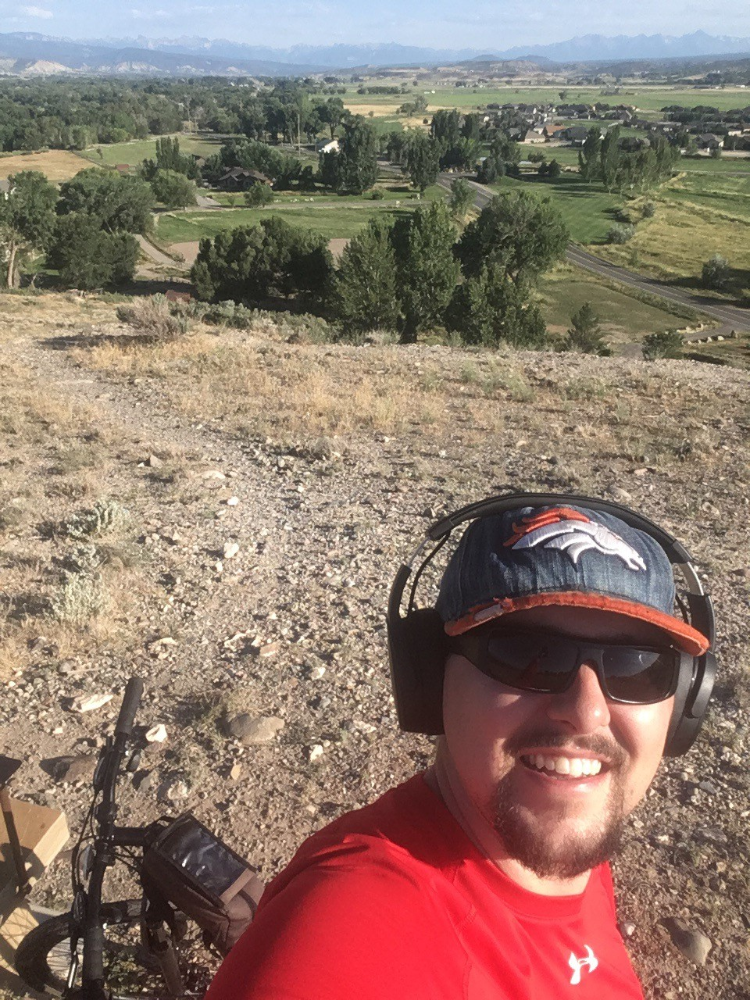

My background
I was born in Fort Hood, Texas. Raised in Farmington, NM, I would say that I have had somewhat of a peculiar upbringing.
Not one so notable that my adventures as a youth could be made into entertainment in the form of film or text, but one that I am proud to share and I believe has been of major
influence to my life. I was an only child, raised by my mother, and grandparents. They all were teachers. All possesing master's degrees. And ALL focused on me as a youth.
I suceeded in my eandovers in school, both academically and in extra curriculars. In high school I gained the honor of becoming a Double Honor Thesbian. As a young man
I began a family with my beautiful wife, Jessica. We have two children, Jay and Kiana. Everyday we are thankful to God that we have been able to have such a great life.
Some of my earliest memories as a kid where playing on the computer. My grandfather impacted my life with his own. Being a computer science teacher, he was always up to date
on the latest and greatest as it where of the tech times. I always had the exposure into the industry, enjoyed arts considerably, but my interests never grew professionally until lately.
Interests
-
Coding! 👨‍💻😉
-
Gaming🎮! Always a good relaxer after a long day. Currently playing Rocket League, Escape from Tarkov and League of Legends
-
Semi pro football🏈! GO Miners⛏! I play Defensive Line, Offensive tackle and Tight End.
-
SPORTS. I'm a fanatic for playing pretty much all sports, even if I am terrible.🏀⚽🎾🏌️‍♂️🏒🏐⚾

Great Outdoors
Camping 🏕, Fishing 🎣, Hiking🥾, Mountain Biking🚵‍♂️, Snowboarding🏂. I LOVE the outdoors, especially with my family. This at the "Lookout", in beautiful Montrose, CO. The mountains in the background are the San Juans. AMAZING panoramic from this outlook.

Disc Golf
I love to play disc golf⛳ (someday soon hopefully professionally), and in a sanctioned tournament one time I got a hole in one from 463 feet away (see pic above!!! 😄)! Currently looking to go to AM Worlds in 2021 🤞
Accomplishments
Thankfully I have many things to be proud of. I have enjoyed many succesful careers in different industries, from owning and operating a construction business to being a head chef.
Carpentry
I have years of experience doing carpentry and construction related projects. I truly love working with my hands. I would love to someday
go on a humanitarian mission and build houses for those in need. I discovered over time that the money wasn't what I enjoyed most
about working in the industry, it was the satisfaction of doing great work. Building this timber pavilion was amazing. Hand cut douglas fir trusses with a chainsaw and some beautiful tenon mortise work.

Photography and Art
I love art. Studying it in high school for 3 years, as well as 3 years of theater, I have an appreciation for all different genres
of art. Photography is one of my favorite practices, because like millions, I have a high resolution camera in my pocket all the time!
I do not draw or paint much anymore, and enjoy working with digital mediums. This is a picture I took of the Devil's Churn in the Suislaw National Forest, Oregon. Great compisition, no?